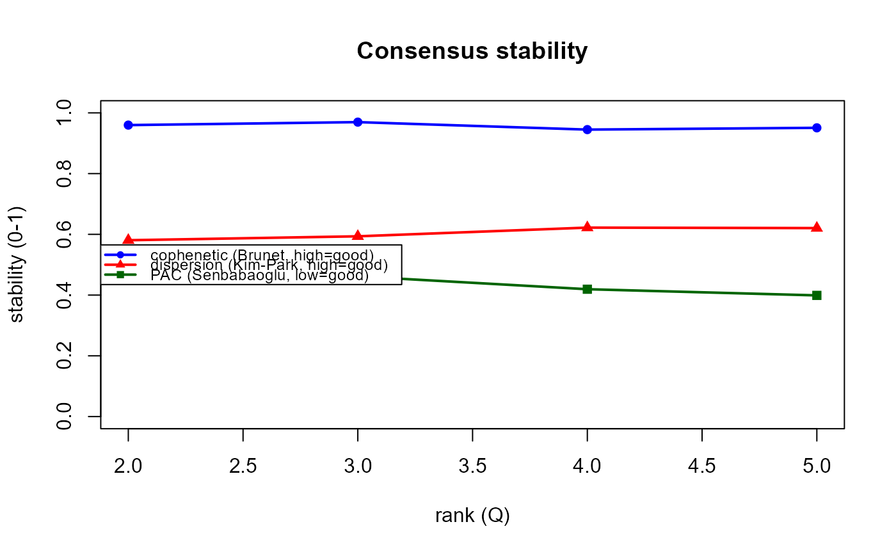
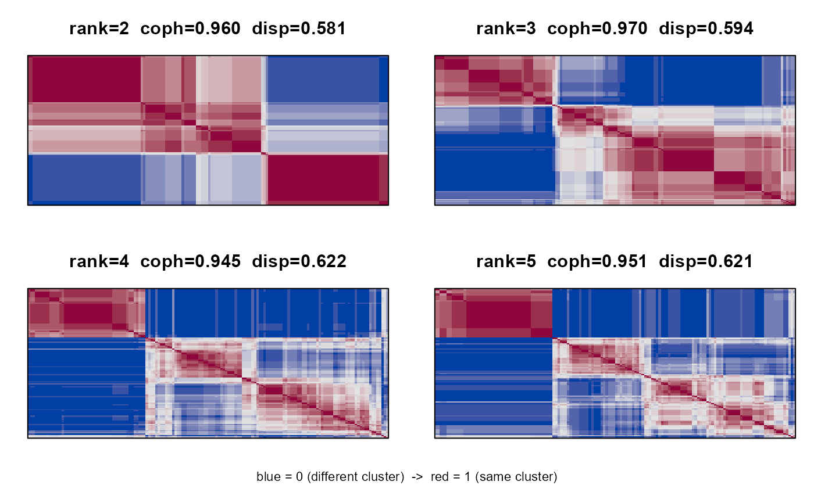
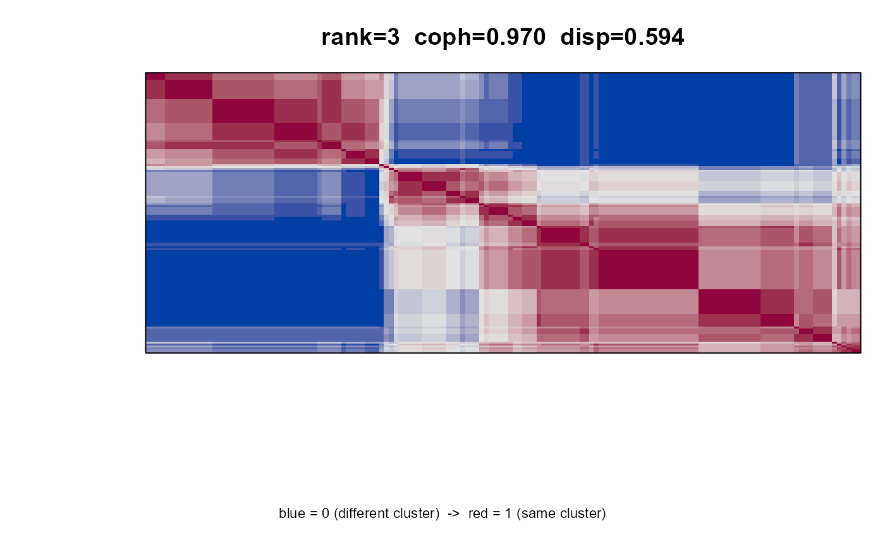

Consensus-clustering rank selection for NMF (Brunet 2004)
Source:R/nmfkc.consensus.R
nmfkc.consensus.RdThe bioinformatics-standard stability approach to choosing the NMF rank.
A lightweight engine like nmfkc.ecv / nmfkc.bicv:
it returns one stability score per rank and nothing more.
For each rank, NMF is run nrun times from different random
initializations (X.init = "runif"). Each run gives a hard
clustering of the samples (the column \(\arg\max\) of the coefficient
matrix). Averaging the \(N \times N\) connectivity matrices (1 if two
samples share a cluster) over the runs yields the consensus
matrix; its crispness measures how reproducible the clustering is. Two
summaries are reported per rank:
cophenetic: the cophenetic correlation coefficient (CPCC) of the consensus matrix (Brunet et al. 2004). Close to 1 = stable.dispersion: the Kim & Park (2007) dispersion \(\frac{1}{N^2}\sum_{ij} 4 (C_{ij} - 1/2)^2 \in [0, 1]\); 1 when every consensus entry is exactly 0 or 1 (perfectly crisp).pac: the Proportion of Ambiguous Clustering (Senbabaoglu et al. 2014) – the fraction of off-diagonal consensus entries falling in the ambiguous intervalpac.range(default \((0.1, 0.9)\)). Lower is better (less ambiguity); a more sensitive readout thancophenetic, which tends to saturate.
Unlike the cross-validation engines (where the rank minimizes the error), here a good rank maximizes stability, or is the largest rank before it drops.
Arguments
- Y
Observation matrix (\(P \times N\)), non-negative.
- A
Optional covariate matrix passed to
nmfkc.- rank
Integer vector of ranks to evaluate (\(\ge 2\)).
- nrun
Number of random-initialization runs per rank (default 30).
- keep.consensus
Logical; if
TRUEalso return the list of consensus matrices (one \(N \times N\) matrix per rank).- ...
Advanced options, rarely needed (defaults in parentheses):
seed(123, base seed; run \(r\) of rank index \(i\) usesseed + 1000 * i + r) andpac.range(c(0.1, 0.9), the ambiguous interval \((u_1, u_2)\) for the PAC measure). Any other arguments are passed tonmfkc(e.g.\maxit);X.initis forced to"runif".
Value
An object of class "nmfkc.consensus" (a list) with:
- cophenetic
Cophenetic correlation coefficient for each rank.
- dispersion
Dispersion coefficient (\([0, 1]\)) for each rank.
- pac
Proportion of Ambiguous Clustering (\([0, 1]\), lower is better) for each rank.
- rank
The evaluated rank vector.
- nrun
Number of runs per rank.
- consensus
List of consensus matrices, or
NULL.
It has print.nmfkc.consensus and
plot.nmfkc.consensus (type = "criteria" /
"heatmap") methods.
References
Brunet, J.-P., Tamayo, P., Golub, T. R., Mesirov, J. P. (2004). Metagenes and molecular pattern discovery using matrix factorization. PNAS 101(12):4164–4169. doi:10.1073/pnas.0308531101 . Kim, H., Park, H. (2007). Sparse non-negative matrix factorizations ... Bioinformatics 23(12):1495–1502. Senbabaoglu, Y., Michailidis, G., Li, J. Z. (2014). Critical limitations of consensus clustering in class discovery. Sci. Rep. 4:6207. doi:10.1038/srep06207 .
Examples
# \donttest{
Y <- t(as.matrix(iris[, 1:4]))
cs <- nmfkc.consensus(Y, rank = 2:5, nrun = 20, keep.consensus = TRUE)
#> consensus: ranks 2,3,4,5, 20 runs/rank (Brunet 2004); 80 fits total...
cs # stability table per rank
#> Consensus rank selection (Brunet 2004), 20 runs/rank
#> best: dispersion max = rank 4 | PAC min = rank 5
#> rank cophenetic dispersion pac
#> 2 0.960 0.581 0.476
#> 3 0.970 0.594 0.462
#> 4 0.945 0.622 0.419
#> 5 0.951 0.621 0.399
plot(cs) # type = "criteria": stability curves

plot(cs, type = "heatmap") # all ranks, n2mfrow grid

plot(cs, type = "heatmap", rank = 3) # one rank, with labels

# }